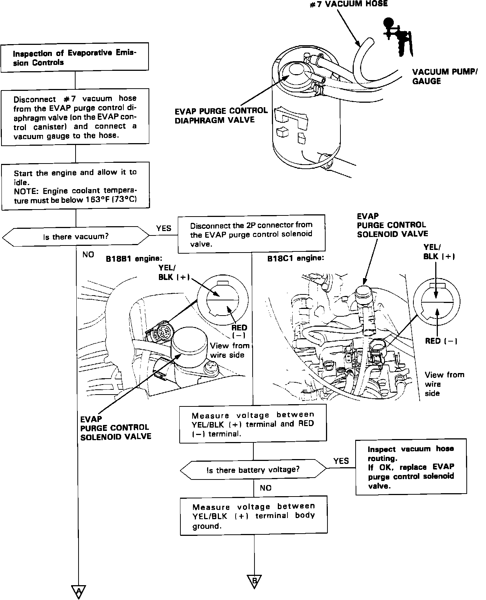
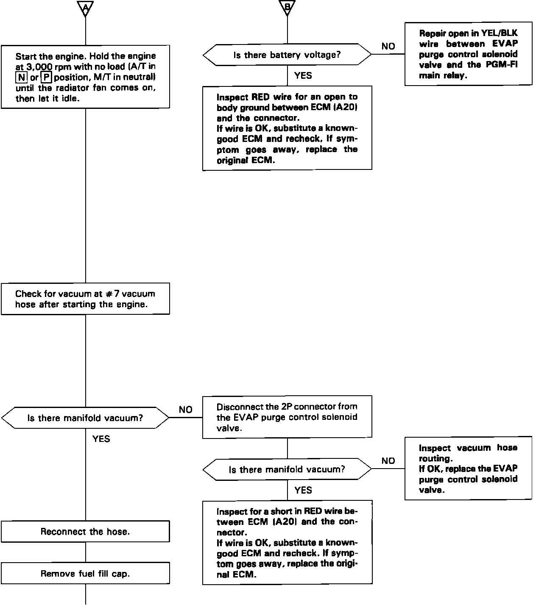
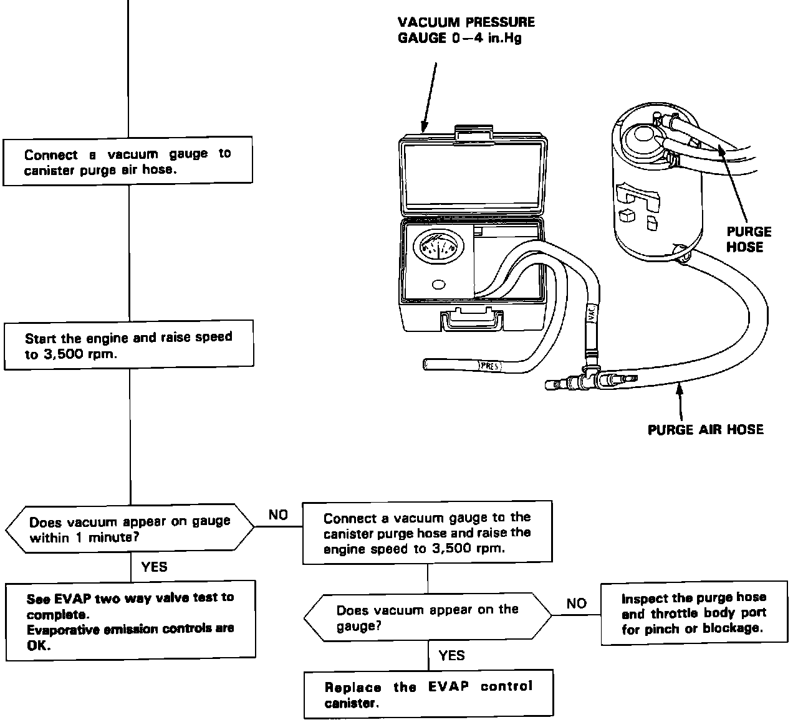
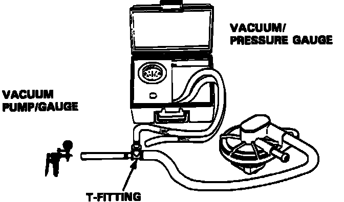
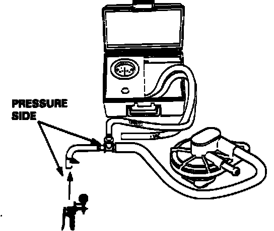

Two-Way Valve Test
Evaporative Emission Control System Testing:

1 OF 3
Evaporative Emission Control System Testing:

2 OF 3
Evaporative Emission Control System Testing:

3 OF 3
EVAPORATIVE EMISSION CONTROLS (EVAP) SYSTEM TEST
TWO-WAY VALVE TEST:
1. Remove the fuel filler cap.
2. Remove the vapor line from the fuel tank and connect it to a T-fitting from a vacuum gauge and vacuum pump as shown.
Two-Way Valve Vacuum Test:

3. Slowly apply vacuum while watching the gauge.
a. Vacuum should stabilize momentarily at 5 to 15 mmHg (0.2 to 0.6 in.Hg).
b. If vacuum stabilizes (valve opens) below 5 mmHg (0.2 in.Hg) or above 15 mmHg (0.6 in.Hg), install a new valve and retest.
4. Move the vacuum pump hose from vacuum to the pressure side of the pump, and move the vacuum gauge hose to the pressure side as shown.
Two-Way Valve Pressure Test:

5. Slowly pressurize the vapor line while watching the gauge. Pressure should stabilize at 25 to 55 mmHg (1.0 to 2.2 in.Hg).
a. If pressure momentarily stabilizes (valve opens) at 25 to 55 mmHg (1.0 to 2.2 in.Hg), the valve is OK.
b. If the pressure stabilizes below 25 mmHg (1.0 in.Hg) or above 55 mmHg (2.2 in.Hg), install a new valve and retest.